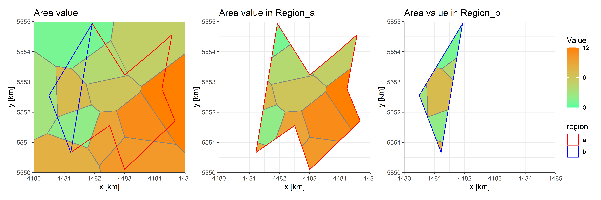
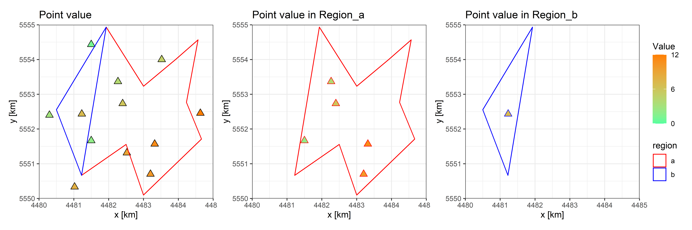
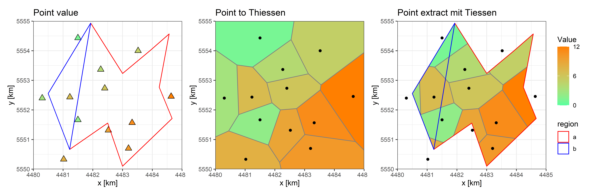
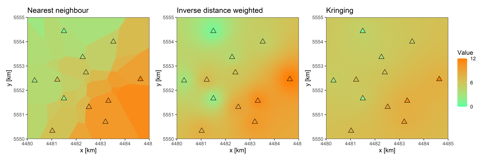

Extract values from Vector (Shape) Data
1 Vector Data
Compared to the raster data are Vector data describe the data use mange Shapes, the basic (or we can say the only three) Shape form are Points, Lines and Polygons. In all cases, the geometry of these data structures consists of sets of coordinate pairs (x, y). (From terra The geometry just define the location and topology, the other important part of vector data is the attributes of every shape, in that store we the data.
In our Hydrology or Meteorology fields have we usually the point-data (e.g. data from measuring station) and area-data (e.g. land use or soil). There may be also some line-data (e.g. isoline), but they are always not used for storing the data, maybe just show the data. So, the operate EXTRACT is actually the statistic of the Vector data for the specific regions.
And in the Blog we will only take the forms POINTS and POLYGONs into account.
2 Extract from Polygons
When we just EXTRACT one value (one attribute) we can straight use the function intersect(), to intersect the data-polygons and regions-polygons then calculate the statistic values for every regions.

But when we need to extract more values (attributes), again the idea from last Blog Exact with scale product will be used:
\[ \vec{\Omega}_{[attribute,region]} = \vec{A}_{[attribute,polygon]} \cdot \vec{W}_{[polygon,region]} \]
\(\vec{\Omega}_{[attribute,region]}\) = Region-value of every region
\(\vec{A}_{[attribute,polygon]}\) = attributes list in the matrix [attribute,polygon]
\(\vec{W}_{[polygon,region]}\) = Weights of every polygon to every region in the matrix [polygon,region]
Weight-Matrix create: just use
intersect()then statistic the portion of the value-area to the region-area in matrix [value-polygon, regions]Value-Matrix create: connect the attribute list
scale product with both Value- and Weight-Matrix
3 Extract from Points
3.1 Numerical Mean
The moooost simple and direct method is the Numerical Mean of points in the region:

- Interset with regions, then select points which in the region
- Calculate mean value of points
The weakness are also obviously, many points, who lay just near the boundary of region, will be ignored. It’s also familiar that in some regions there are no points laying in.
So, we need maybe convert the point-data to polygon- or raster-data
3.2 Tiessen (Dirichlet) Polygon
Actually the convert to the polygon is the most popular and typical method specially with the Tiessen (Dirichlet) Polygon in meteorological fields.

- Convert point data to Tiessen polygon data
- use the method of polygon like above
3.3 Interpolate as Raster
The second convert idea is convert to the raster: Interpolation

The Interpolation is also one important issue, and it will be discussed in th near future. Here will just show the three most impotent methods: Nearest neighbor, IDW (Inverse distance weighted) and Kringing
The three methods are also very easy processed in R::terra, that will be showed in the next Blog.
The end.